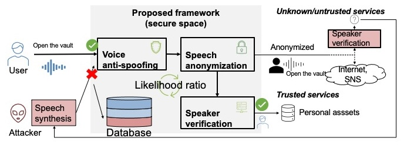

JST PRESTO Project¶
This is the home page of JST PRESTO project:
Unified Framework for Speech Privacy Protection and Fake Voice Detection
プライバシー保護と偽音声検出を統合する音声データ処理基盤
Information:
PI: Xin Wang
Period: 2023/10/01 - 2027/03/31
Research area: 社会変革に向けたICT基盤強化 Strengthening ICT Infrastructure for Social Change
Background: The era of infodemics calls for a speech data processing system that can detect deepfake voices and anonymize speech privacy. However, existing fake voice detection and anonymization methods are independently designed, lacking joint optimization and theoretical support.
Core ida: This proposal tries to unify fake voice detection and voice anonymization within a deep learning framework based on likelihood ratios.
Highlight¶
Highlighted research outcomes will be explained.
Outcome¶
Invited talk: Voice privacy and security issues after the boom of speech synthesis technology
Date: 2023/11
Place: Shonan Village, JP
Slide: (to be uploaded)
Keynote talk: Harnessing data for improving speech spoofing countermeasures
Date: 2023/11/22
Place: NII, JP
Slide: (to be uploaded)